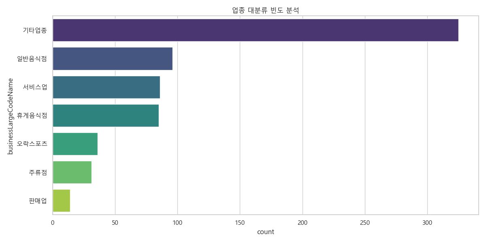
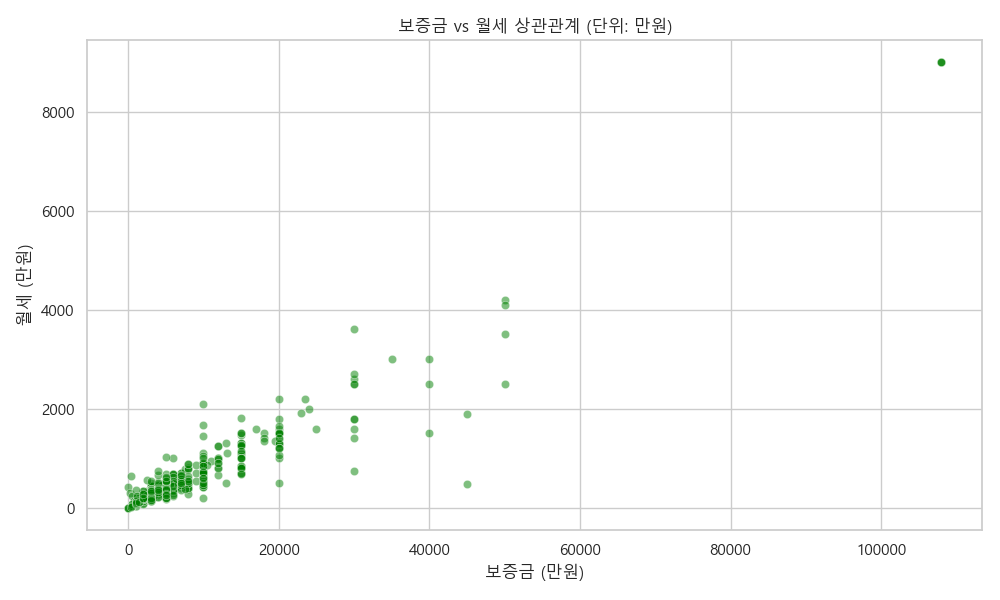
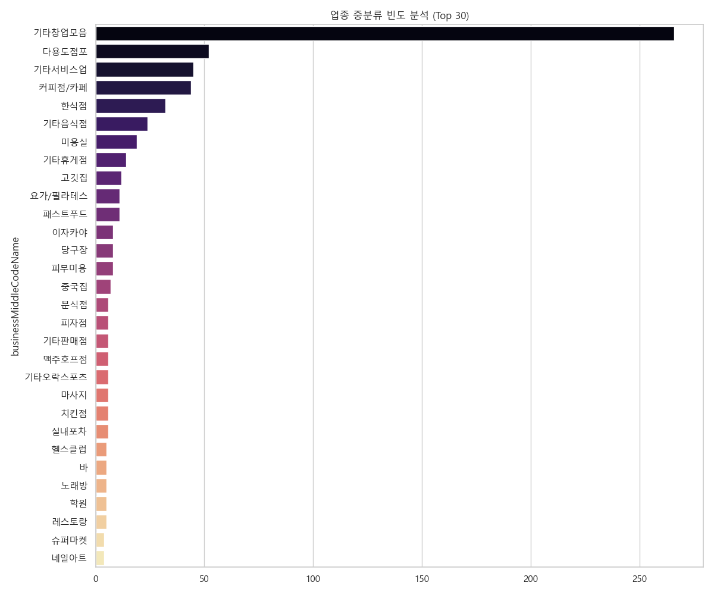
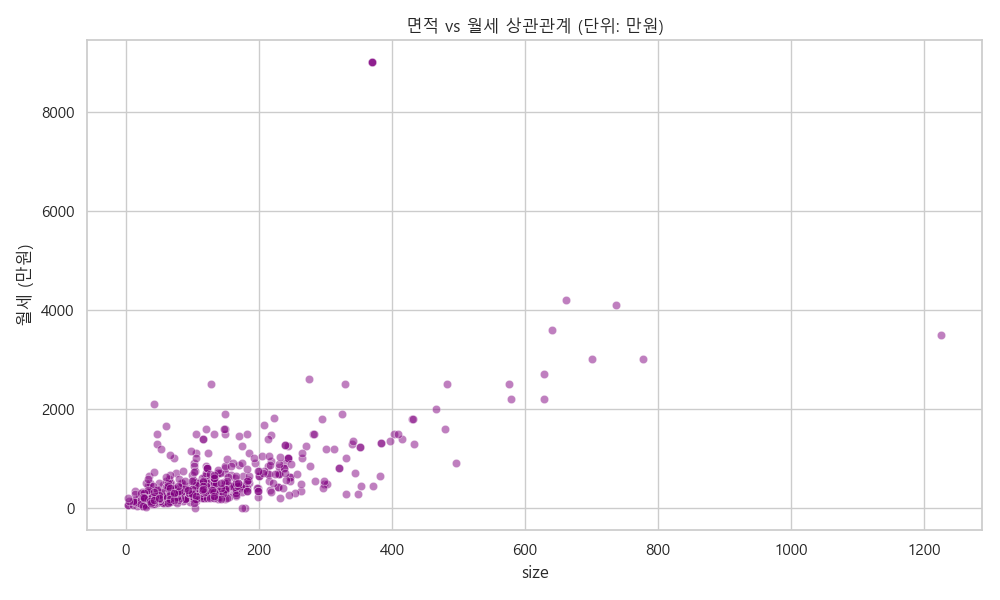
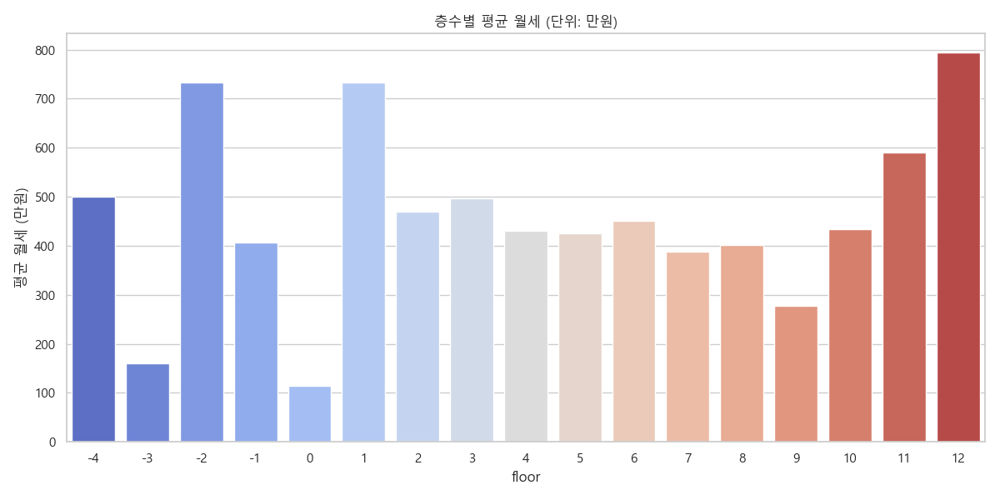
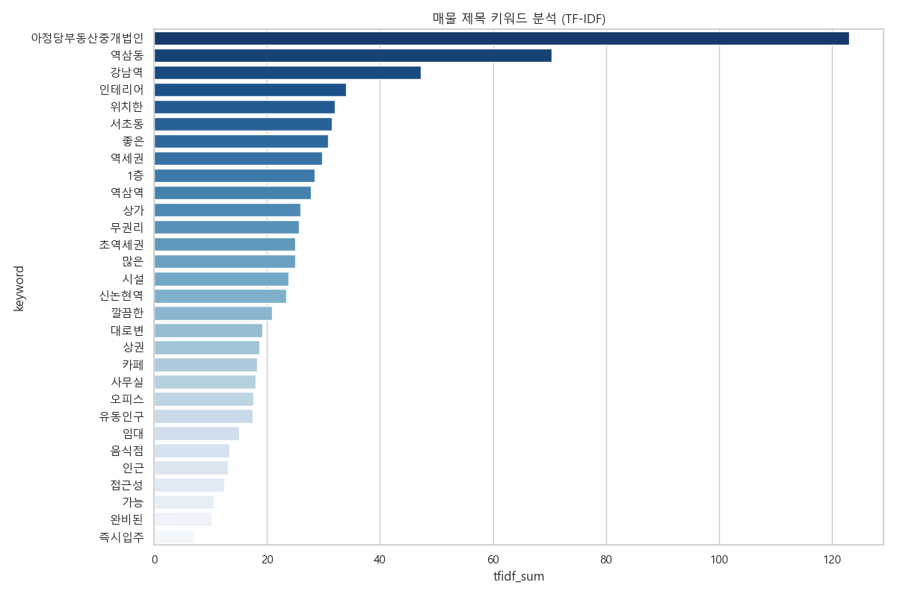
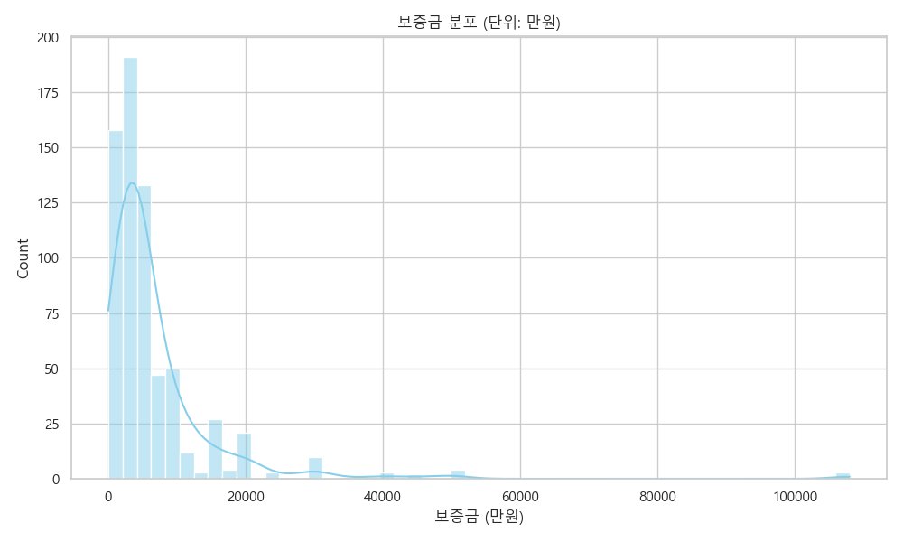
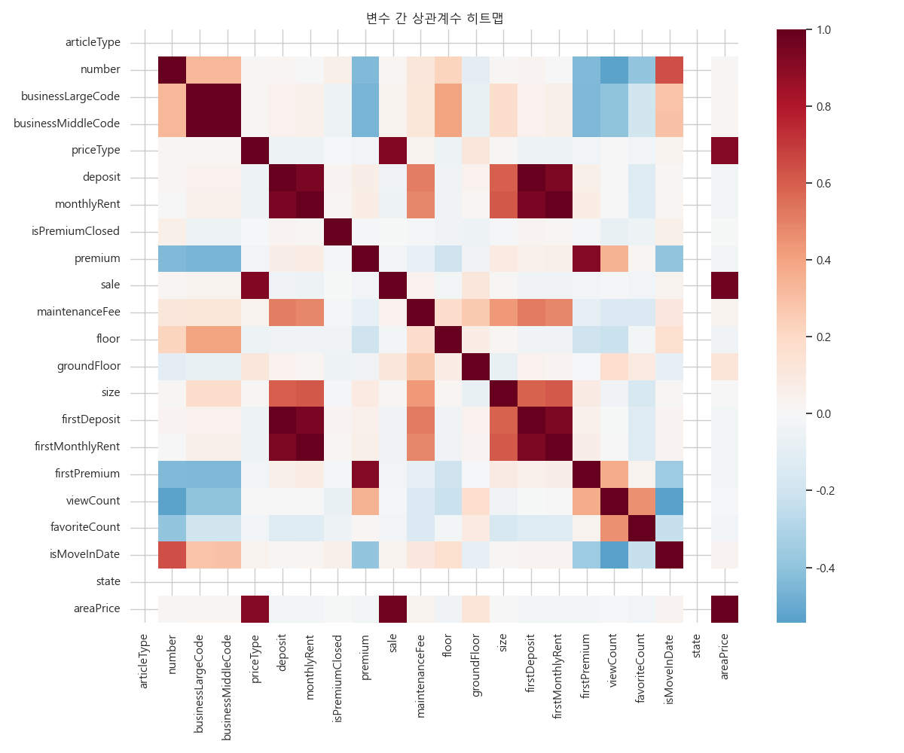

Nemo 매물 데이터를 기반으로 한 탐색적 데이터 분석 결과








본 대쉬보드는 강남권 상업 부동산 시장의 현재 주소를 정밀하게 보여줍니다. 분석된 673건의 매물은 평균 6,895만 원의 보증금과 534만 원의 월세 수준을 형성하고 있으며, 역삼역 인근에 가장 높은 밀집도를 보이고 있습니다. 이는 단순한 숫자를 넘어 강남권이 여전히 대한민국 상업의 중심지이자, 가장 역동적인 임대 시장임을 증명합니다.
특히 '인테리어 완비'와 '무권리' 키워드의 부상은 신규 창업자들이 초기 투자 리스크를 극도로 경계하고 있음을 나타냅니다. 임대인 측면에서는 공실률을 낮추기 위해 기존 인테리어를 활용한 '승계 임대' 전략이 유효하며, 임차인 측면에서는 1층이 아닌 중층부 매물을 통해 고정비를 절감하는 실속형 창업 전략이 추천됩니다.
결론적으로, 강남 상권은 풍부한 직장인 배후 수요를 바탕으로 한 안정적인 시장이지만, 동시에 극심한 가격 편차와 경쟁 강도를 가지고 있습니다. 본 대쉬보드의 데이터 분석 결과를 바탕으로 입지 선정과 예산 수립을 진행한다면, 불확실한 시장 환경 속에서도 성공적인 비지니스 안착이 가능할 것입니다.